2018
L’ouverture des Petons
Les Petons dans l’Herbe ont ouvert leurs portes en 2018 à Nantes Nord, avec l’envie de proposer une pédagogie Montessori exigeante dans un environnement à taille humaine et profondément connecté à la nature.
Née de la volonté d'un groupe de parents et d'éducateurs, Les Petons dans l'Herbe est une école Montessori éco-citoyenne accueillant les enfants de 3 à 12 ans à Nantes Nord. Installée dans une maison entourée d’un vaste jardin, l’école a été pensée comme un véritable lieu de vie : on y apprend, on y manipule, on y déjeune, on y joue, on y cultive et on y prend soin du vivant.
Découvrir le lieu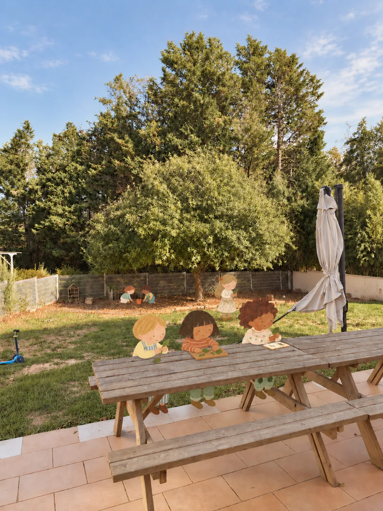
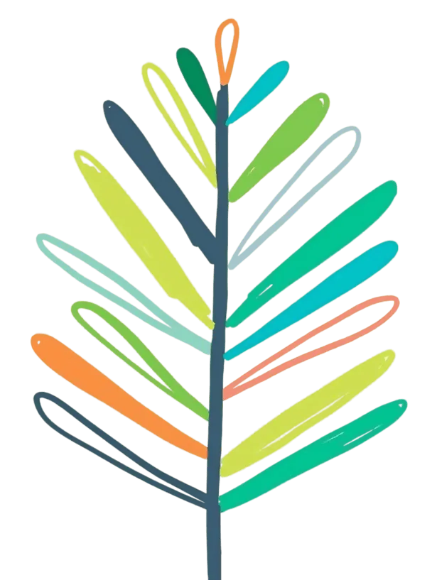
Les Petons dans l’Herbe ont ouvert leurs portes en 2018 à Nantes Nord, avec l’envie de proposer une pédagogie Montessori exigeante dans un environnement à taille humaine et profondément connecté à la nature.
Depuis 2026, un nouveau chapitre s’écrit avec Constellation Montessori, l’association qui porte désormais le projet. Parents et professionnels se sont engagés pour préserver ce qui fait l’identité des Petons tout en construisant une école solide et durable pour les années à venir.
Aujourd’hui, l’école accueille les enfants dans deux ambiances : une Maison des enfants 3–6 ans et une ambiance 6–12 ans.
Respect du rythme individuel, environnement préparé, matériel concret. Des éducateurs formés à la pédagogie Montessori accompagnent chaque enfant.
Matériaux naturels, compostage, alimentation bio et locale, charte éco-citoyenne, potager et sorties nature. Notre nom invite à marcher pieds nus dans l'herbe — et à prendre soin du vivant.
Nous accueillons chaque enfant et chaque famille sans jugement, dans le respect de leur individualité. Rythmes, besoins, langues, cultures ou fonctionnements différents, notamment neuroatypiques : nous cherchons à comprendre chacun pour l’accompagner avec écoute et bienveillance.
Près de 650 m² entourent la maison et offrent aux enfants un véritable espace d’exploration au quotidien. Une partie basse du jardin a été aménagée avec des copeaux pour permettre de jouer, manipuler et expérimenter dehors, avec notamment une cuisine à patouille.
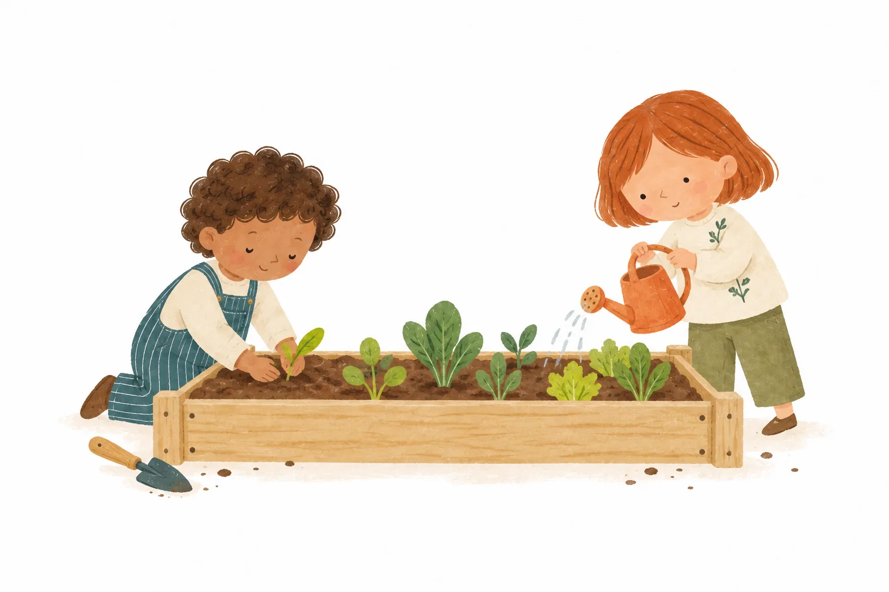
Le jardin accueille aussi des bacs potagers et un compost, qui permettent d’observer les cycles du vivant, de cultiver, de prendre soin des plantations et de comprendre concrètement ce que deviennent les déchets organiques.
Une terrasse permet également aux enfants de 3–6 ans de prendre leurs repas dehors une grande partie de l’année, hiver comme été lorsque la météo le permet.
Les Petons dans l’Herbe sont installés dans une véritable maison, avec des espaces distincts qui permettent de respecter les rythmes et les besoins de chacun.
Les informations pratiques

Les 3–6 ans disposent notamment d’une cuisine équipée indépendante de l’espace de travail, ainsi que d’une salle de sieste séparée, pour préserver le calme et offrir un vrai temps de repos aux enfants qui en ont besoin.
Les toilettes du rez-de-chaussée sont adaptées aux petits et séparées pour préserver l’intimité de chacun.
Découvrir l’ambiance 3–6 ans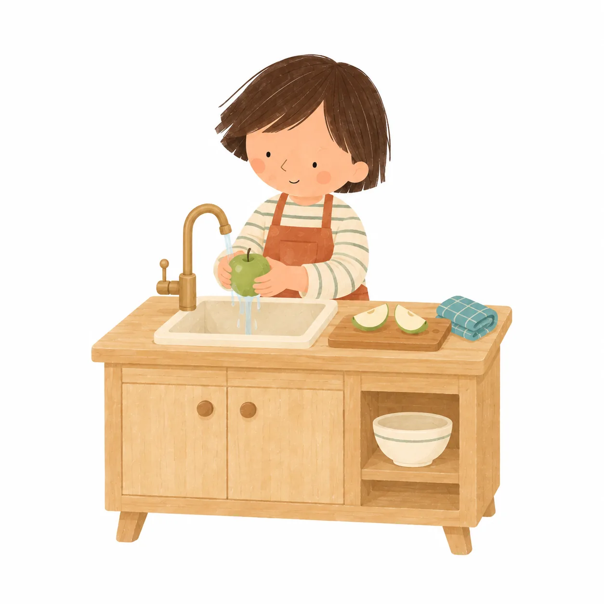
À l’étage, l’ambiance 6–12 ans bénéficie également d’un coin cuisine indépendant, adapté à leur âge et à leur autonomie.
À l’étage, les enfants disposent également d’un WC qu’ils peuvent utiliser en autonomie.
Découvrir l’ambiance 6–12 ans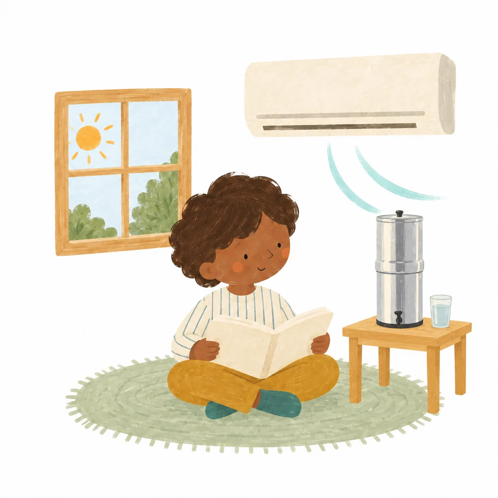
Pour que les enfants puissent apprendre dans de bonnes conditions, les ambiances sont équipées d’une climatisation réversible. Elle permet de préserver leur confort pendant les fortes chaleurs comme en hiver.
Cette attention portée au bien-être des enfants se retrouve aussi dans les deux ambiances, équipées de fontaines filtrantes Berkey pour leur proposer de l’eau filtrée au quotidien.
Ces espaces séparés permettent de cuisiner, déjeuner, se reposer ou mener certaines activités sans perturber les temps de concentration dans les ambiances.
La musique a toute sa place aux Petons. Dans l’approche Montessori, l’écoute, le mouvement et la manipulation permettent d’affiner son oreille, d’explorer les rythmes et de trouver une autre manière de s’exprimer.
Chaque vendredi, un temps est consacré à la musique dans l’ambiance 3–6 ans. Les clochettes Montessori permettent aussi d’écouter avec attention, de comparer les sons et de reconnaître leurs différences.
Chez les 6–12 ans, cette découverte se poursuit notamment avec les barres tonales, pour explorer les notes, leurs relations et la construction des mélodies.
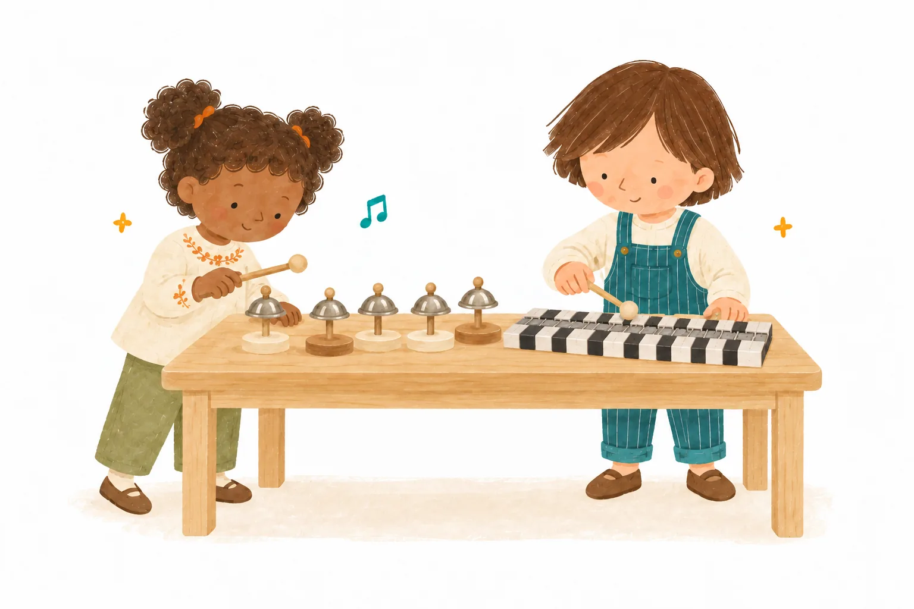
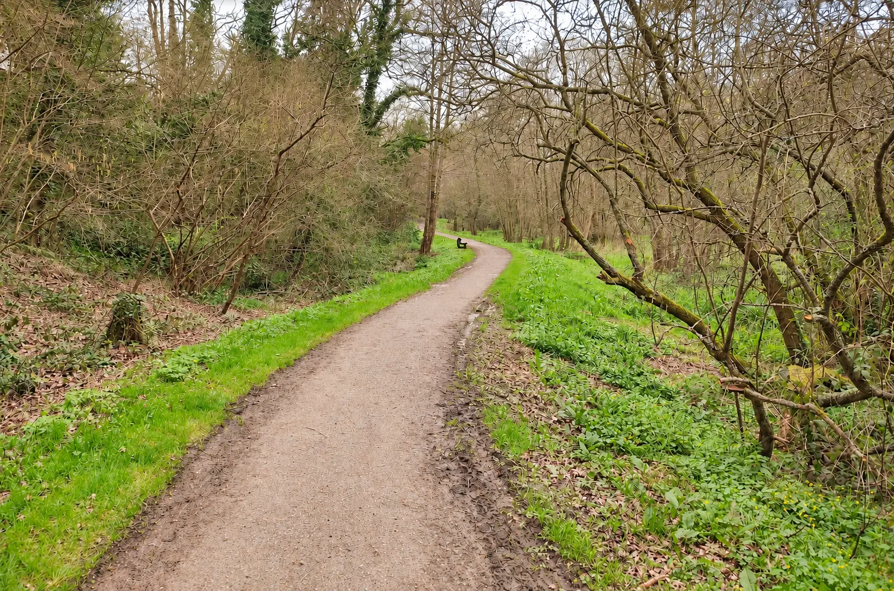
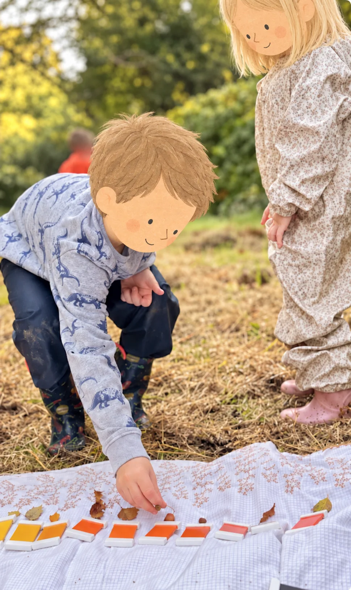
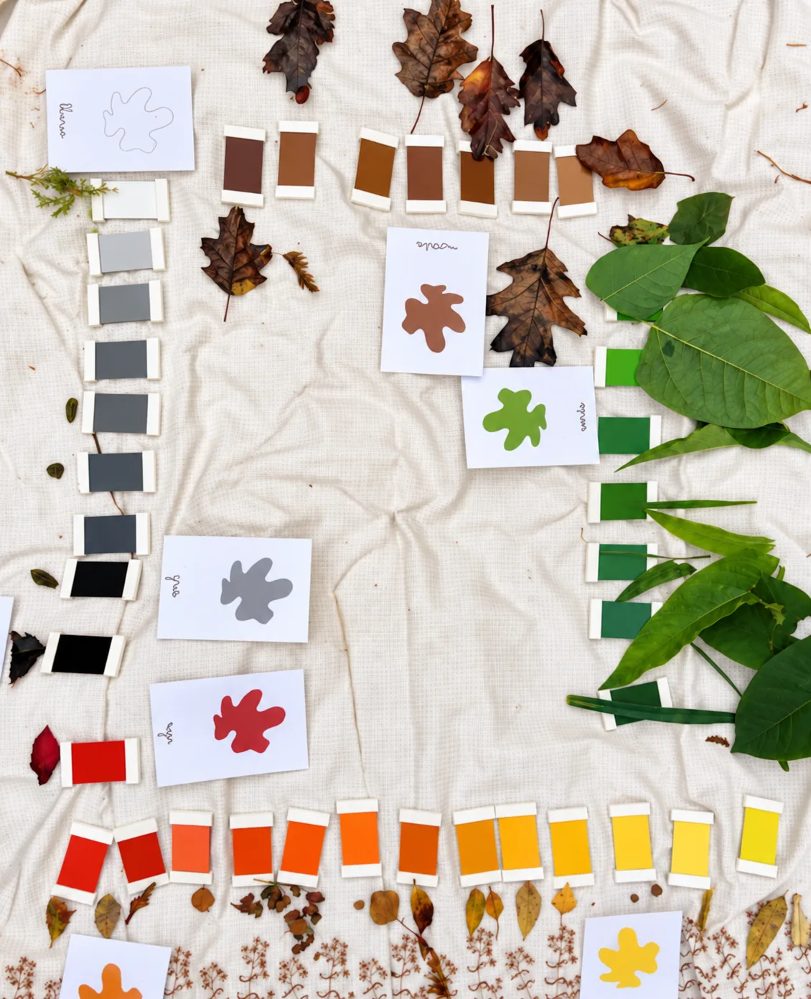
À quelques pas de l’école, le chemin des Renards offre un terrain d’observation grandeur nature. Les enfants y sortent régulièrement pour explorer leur environnement, observer les saisons et le vivant, travailler la botanique ou simplement apprendre autrement, dehors.
Ces sorties permettent de relier les apprentissages à des expériences concrètes : reconnaître une plante, observer une transformation, comparer, questionner, dessiner, classer, prendre des notes… La nature devient alors un véritable support de travail.
Le mouvement a aussi toute sa place dans la vie de l’école. Les enfants de 3–6 ans comme ceux de 6–12 ans bénéficient d’un temps de sport chaque lundi, organisé selon les besoins et les saisons dans le jardin ou au chemin des Renards.
Ces temps permettent de développer la coordination, l’endurance, le sens de l’effort, mais aussi la coopération et la confiance en soi. En ce début d’année, par exemple, les 3–6 ans travaillent le relais, en apprenant à courir ensemble, attendre son tour et encourager les autres.
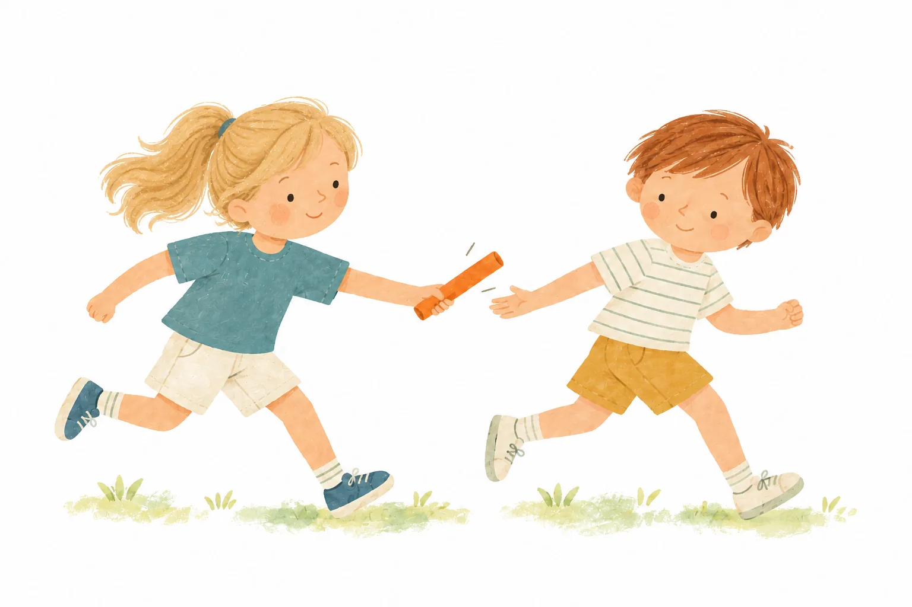
L’école aime aussi faire de ces temps sportifs de vrais souvenirs partagés. L’an dernier, les enfants ont ainsi participé à leurs premières courses, soutenus par les parents venus les encourager. À l’arrivée : médailles, collation et petit diplôme pour célébrer les efforts de chacun. Une manière joyeuse de faire grandir le goût du mouvement, du dépassement de soi et de l’esprit d’équipe.
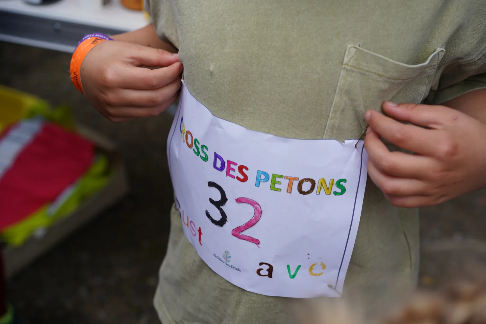
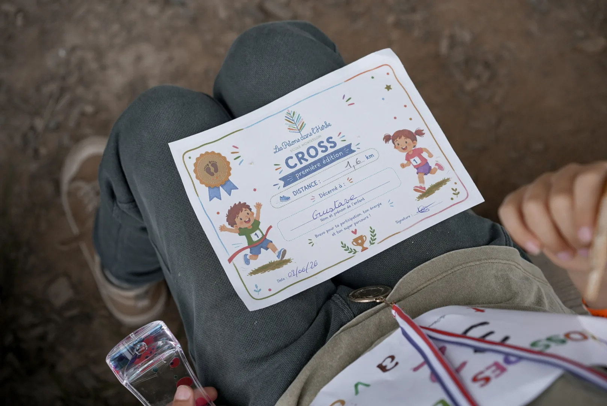
L’ouverture sur le vivant se prolonge aussi grâce à des partenariats locaux. Les Petons travaillent notamment avec la Ferme de Contrevent, une micro-ferme urbaine associative qui permet aux enfants de découvrir autrement le monde du jardin, des cultures et du soin porté à la terre.
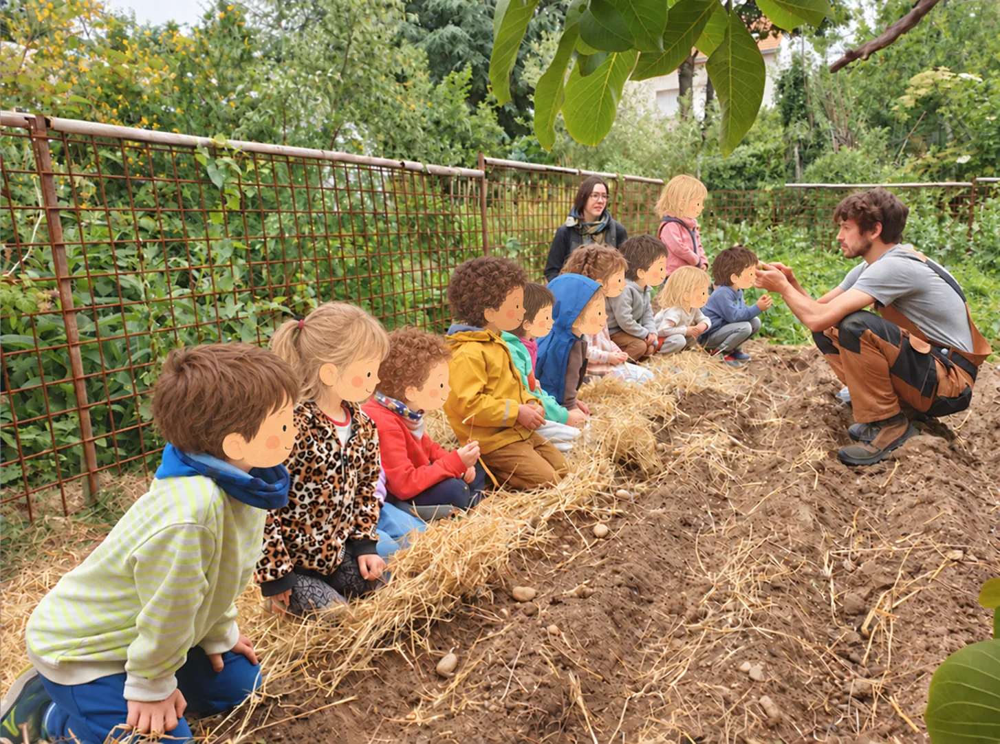
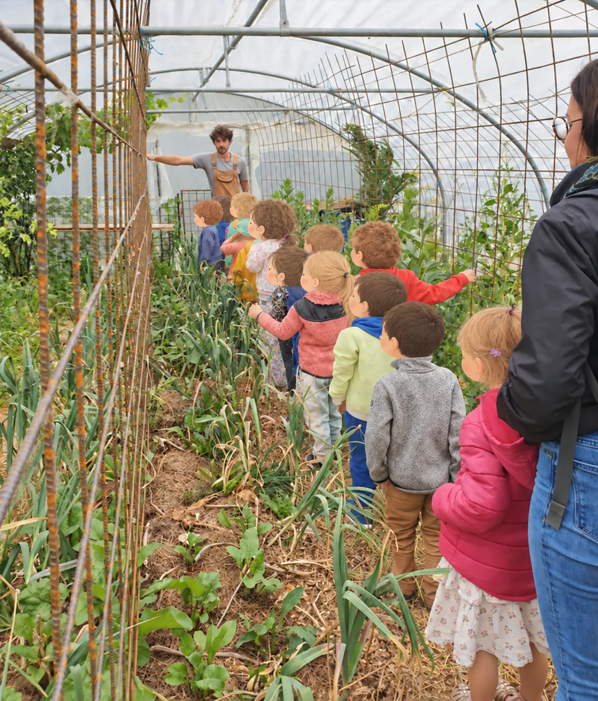
Les 3–6 ans y réalisent des plantations et peuvent ensuite suivre l’évolution de leurs cultures au fil de l’année. Ces expériences donnent du sens aux apprentissages : semer, observer, patienter, voir pousser, comprendre les besoins d’une plante et mesurer concrètement les effets du temps, des saisons et du soin apporté.
Rien ne remplace une visite. Venez rencontrer l'équipe et ressentir l'atmosphère de l'école.